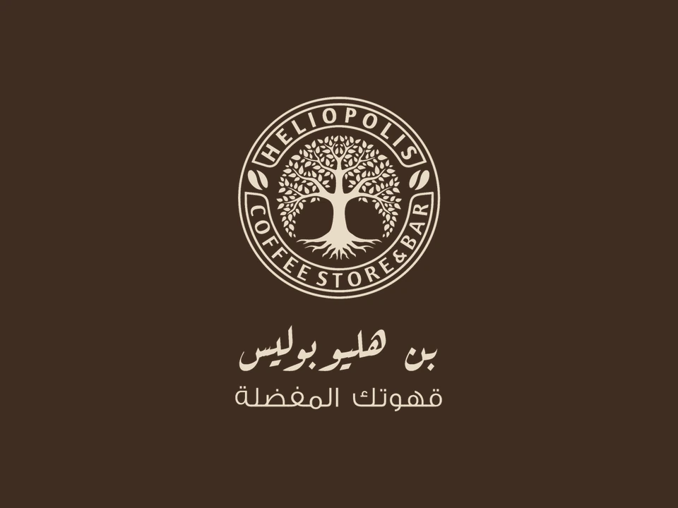

Case study 03
Heliopolis Coffee
IndustryFood & beverage
MarketEgypt
ProjectSocial media campaign
I launched the Heliopolis breakfast campaign to position breakfast as a cheerful daily ritual and strengthen loyalty to the brand. A luxury photo shoot at the Heliopolis branch showcased the refined mood and introduced the new breakfast item, designed to attract a wider audience while keeping a consistent, luxurious vibe.
Campaign
I introduced the new thyme chicken breakfast item, crafted to blend fresh flavors with a luxurious twist. The launch was highlighted through a luxury photo shoot, designed to attract a wider audience while keeping the refined Heliopolis Coffee vibe.
211,684
Engagement
81.7%
Target